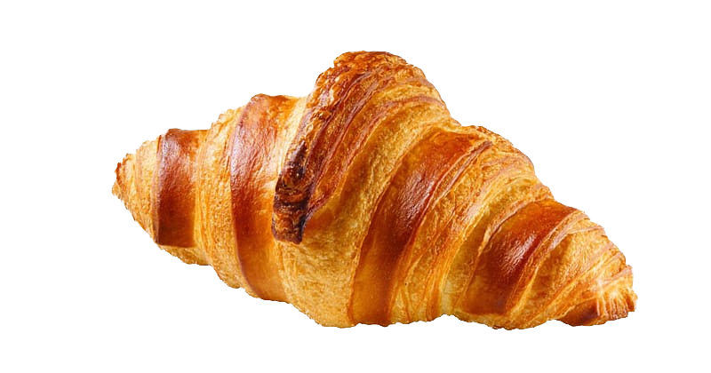
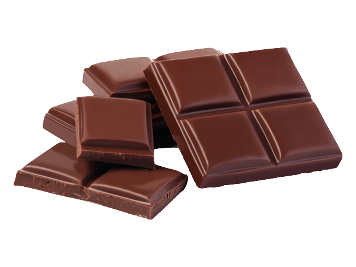
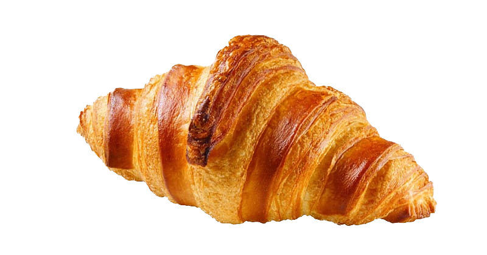
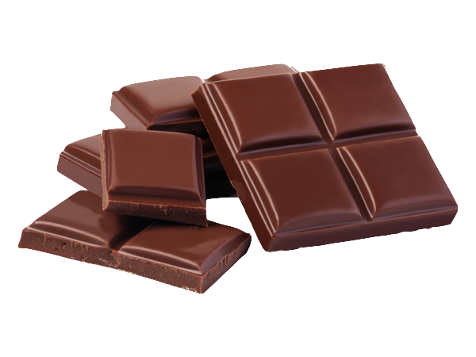

Brown is often seen as solid, much like the earth, and it's a color often associated with resilience, dependability, security, and safety. Feelings of loneliness, sadness, and isolation. In large quantities, it can seem vast, stark, and empty, like an enormous desert devoid of life.
 



Brown maintains that gratitude bodes well for positive living. It’s for this reason why it finds joy in the little things. From a cozy home to a tasty meal, the color brown appreciates what most take for granted. The color brown encourages us to give thanks for our many blessings. As a result, resentment and worry remain at arm’s length.